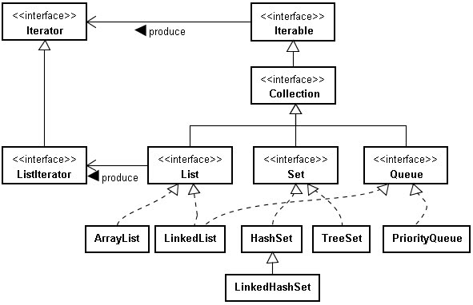

程式中經常有將物件收集在一起以便管理使用的需求，一個實作Collection介面的物件可以提供這種服務。
Collection定義了收集管理物件的基本行為，例如add()、remove()、clear()、size()等方法，基於管理物件時所需的不同特性，Collection下有三個直接子介面：List、Set與Queue。List在收集管理物件時提供索引特性，Set則是所收集的物件不重複，Queue則讓所收集的物件具備佇列、排隊的功能。
以下為Collection相關介面與實現類別之基本架構：

在Java這類支援物件導向的程式語言，若要使用其所提供的程式庫，不可僅從API個別方法如何使用了解，而必須了解基本架構，如此就不會被繁複的API所迷惑。
Collection繼承自Iterable介面，如 神奇的 foreach 中 曾經介紹過的，Iterable的iterator()規定傳回實作Iterator的物件，這不僅是為了foreach語法可以使用，而是因為，不同的 收集物件特性會導致不同的資料結構實作，為了能有個統一的方式，可以循序走訪所收集的所有物件，而不用管是使用哪種資料結構實作，因而可使用 Iterator 模式。
由於Collection的父介面是Iterable，這代表著所有實作Collection的物件，都可以使用iterator()方法傳回Iterator物件，然後使用Iterator物件來循序走訪所有收集的物件。
實 作Collection子介面List的物件，在其收集物件時，會連帶有索引資訊，最基本的就是使用陣列作為實作List的內部資料結構，因為陣列本身即 具有索引特性，這就是ArrayList的實現。由於內部使用陣列實作，所以指定索引隨機取出物件時非常快速，但如果要將某物件安插至陣列中某個索引，則 會涉及後續物件的索引值之調整，此時效能會較差，因而ArrayList適合用於收集變動機會不大的物件，少有移除中間索引或安插物件需求的時候。
LinkedList 則在內部使用鏈結（link）方式實現List的特性，由於鏈結在安插或移除某個中間索引物件時，只涉及下一節點參考的調整，所以適合用於收集變動機會較 多的物件，例如一個隨時會加入或離開聊天室的需求，不過要取得指定索引值時，基本上是從第一個索引物件開始，然後找到下一節點，如此直到找到指定索引物件 為止，所以對於隨機指定索引來取得物件時，效能差於ArrayList。
Iterator基本上只能往下一個走訪物件，也就是可以使用 hasNext()測試是否有下一物件，使用next()取得下一物件，而其子介面ListIterator，則提供了往前走訪物件的行為，也就是可以使 用hasPrevious()測試是否有上一物件，使用previous()取得上一物件。ListIterator可由List物件的 listIterator()傳回，List具有索引特性，ListIterator則也提供了nextIndex()與previousIndex() 可以取得下一個或上一個索引。
Set中所收集的物件是不重複的，是否重複則視所收集物件的equals()及hashCode()定義來 判斷，事實上，所有要被Collection收集的物件，建議都重新定義其equals()與hashCode()方法，以在必要的使用供 Collection使用。以HashSet實作為例，其在內部使用Hash桶實現，HashSet對所收集的物件，會先取得其hashCode()的 值，根據其值決定要將物件置於哪個桶中，如果桶中有物件，則再根據equals()比對，桶中的物件是否為相同之物件，如果相同就不再置入，因而實現不重 複收集物件的特性。
如果要使用iterator()取得Iterator以循序走訪HashSet所收集的物件，其順序是難以預測的，如果想要走訪時的順序，就是當初所插入物件的順序，則可以使用LinkedHashSet。重複收集的物件不會影響所收集物件的順序。TreeSet則使用紅黑樹實現了所收集物件的排序，排序的決定方式則可讓被收集物件實作Comparable介面（根據被收集物件的Comparable定義來決定稱之為自然排序（natural ordering），例如String就以字典順序的方式實作了Comparable介面），或設定一個Comparator物件給TreeSet來決定排序方式。
Queue介面定義了佇列相關行為。LinkedList有實作Queue介面，因而你可以將LinkedList當作佇列來操作。PriorityQueue也實作了Queue介面，基本上雖是先進先出，不過加入了優先權的機制，有較高優先權的將被排到最前頭，優先權決定方式同樣可讓被收集物件實作Comparable介面，或設定一個Comparator物件給PriorityQueue來決定物件的優先權。
可以收集物件的除了Collection之外，Map也經常使用。Map顧名思義，就是可按圖索驥，按鍵（Key）取值（Value），如同字典一般，使用Map持有物件時，必須提供一個鍵，日後想取得物件時，就是根據這樣的鍵來取得對應的物件值。
雖 然在架構上，Map並不是Collection，但Map的幾個方法都可以產生Collection或其實作物件，但如keySet()方法，可以將 Map所有的鍵物件，以Set的方式傳回，如果你熟悉Collection，就會知道如何取得Set中的物件，並據以取得Map中對應的值物件，又或者， 你可以直接使用values()方法，傳回一個Collection實作物件，當中包括所有Map中的值物件。
有了這樣的基本架構認識，面對各實作物件上繁多的方法及參數，就不會再被迷惑。